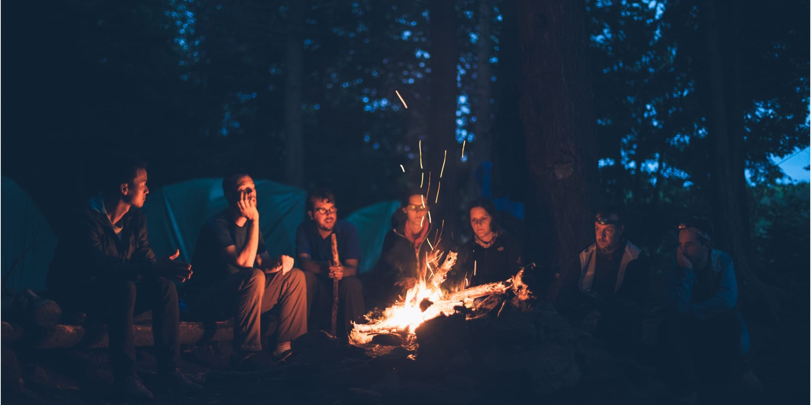
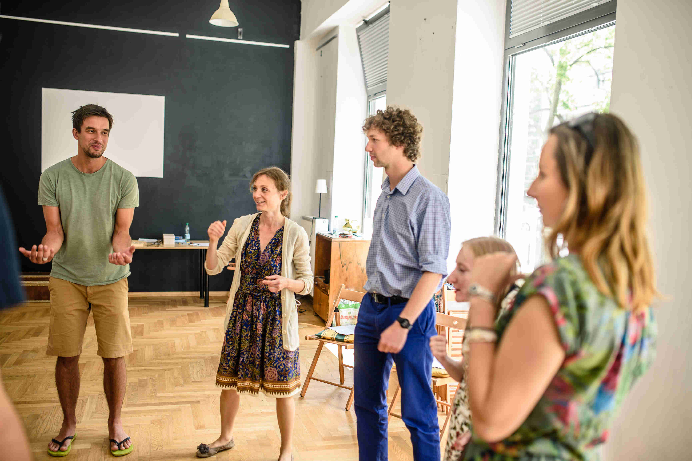

Warsztaty Sztuki opowiadania dla dorosłych - Część I
cena
49 - 59 zł
liczba uczestników
6 - 18
czas
3,5 h
Co będziemy robić:
Będzie to spotkanie dla wszystkich, którzy chcieliby opowiadać piękniej, swobodniej i odważniej. Będziemy na nim budzić naszą wyobraźnię oraz poznawać tajniki storytellingu. Przejdziemy kolejne etapy nauki opowiadania historii – od technik zapamiętywania fabuły aż po opowiadanie dramatyczne. Pobawimy się też perspektywą narracyjną i stosunkiem emocjonalnym opowiadacza. Czeka nas przygoda ze słowem i wyobraźnią oraz... dobra zabawa!
Prowadzący: Jerzy Szufa
Wstęp: 59 zł (49 zł przy zakukpie biletu do 01.01.2019)
W razie pytań proszę o kontakt: sztuka.opowiadania@gmail.com lub 516 273 806
Adres: Stacja Muranów, ul. Andersa 13, Warszawa

Opinie uczestników warsztatów z poprzednich edycji:
Ania
Polecam wszystkim, którzy lubią opowiadać historie albo chcieliby je opowiadać, ale nie mają śmiałości. Także tym, co występują publicznie, a chcieliby to robić dobrze.
Jerzy nie poda Ci żadnych trikow, ale wyjdziesz wiedząc i umiejąc więcej. A przy okazji dobra zabawa i bycie wśród ciekawych ludzi.
Wojciech
Najbardziej podobały mi się przyjazna atmosfera, luz, a jednocześnie skupienie, możliwość nauczenia się ciekawych technik i wypróbowania ich bez uczucia bycia ocenianym.
Katarzyna
Warsztaty pozytywne, rozwijające i relaksujące jednocześnie. Prowadzący kompetentny, przygotowany i niezwykle sympatyczny :)
Łukasz
Warto się przemóc, nawet osoby nieśmiałe potrafiły się odnaleźć :) Wyszedłem lepszym opowiadaczem.

